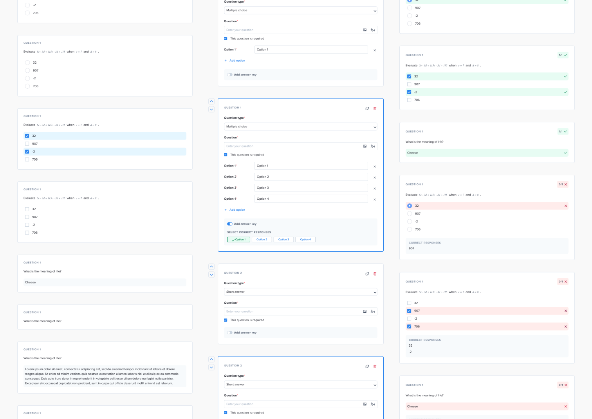
Timeline
2 weeks
Role
Lead Product Designer
Company
schoolhouse.world
Team
Product Manager
Engineer (2)
Design Manager
Schoolhouse.world is an ed-tech startup building a peer-to-peer tutoring platform.
In the summer of 2022, our team designed and developed Assessments – so tutors could create assessments and learners could take the created assessment.
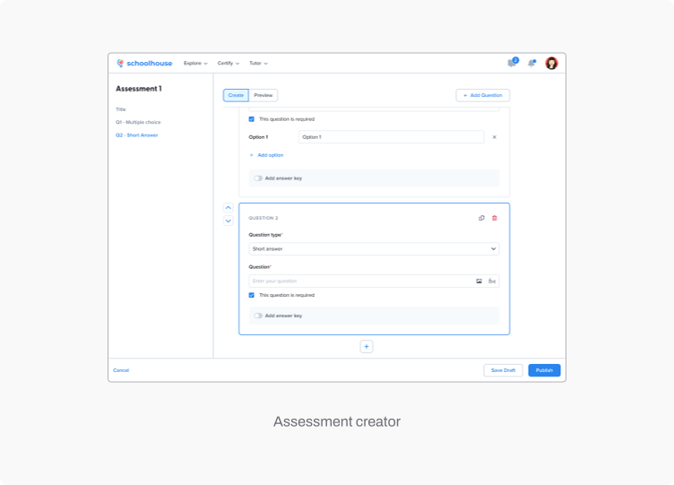
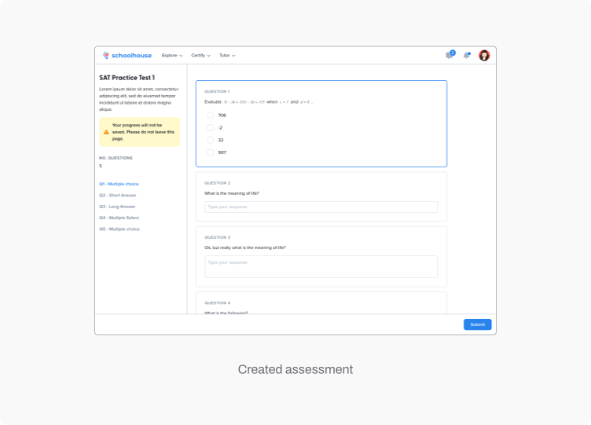
Tutors require multiple question types
Different question types worked best in different contexts. For example, multiple choice works well for retention-based questions in chemistry or reading comprehension. On the other hand, long answer works well for transfer-based questions and writing.
Engineers value velocity
Our engineering team was small but passionate. There was a lot to get done by the end of the summer, so pace of execution mattered.
Primary colours were monochromatic & blue and leveraged from our existing design system so tutors focus on the content of the assessment. Accent colours such as green and red were only used to contrast important information, such as correct and incorrect responses.
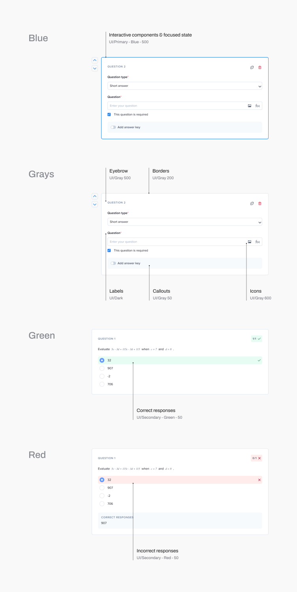
We knew from user research that creating assessments could become tedious and repetitive. In response, the first version of Assessments prioritized user-friendly assessment creation with accessible form design.
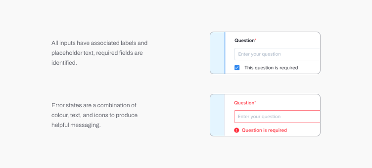
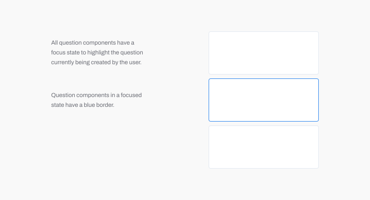
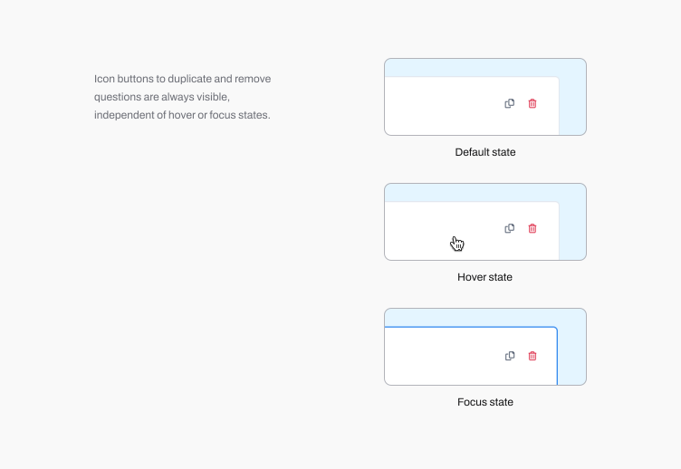
To keep styling efforts at a minimum, interactive components are leveraged from existing components in our design system.
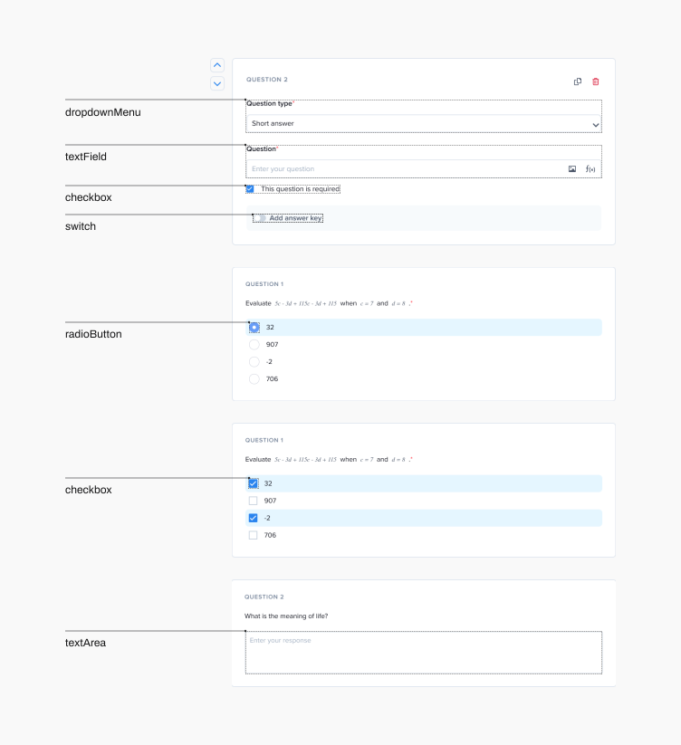
Each question created by the tutor exists in its own question block. By drawing an analogy to lego blocks, new question blocks are added, removed, or reordered with ease. An assessment is created when individual question blocks are assembled together.
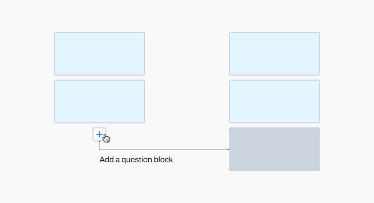
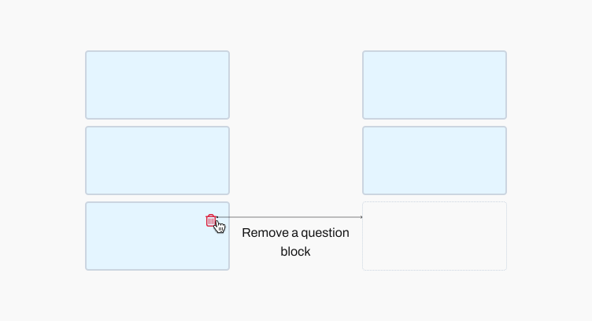
Each question block created by the tutor is rendered into a question component that varied its UI depending on which question type was selected. The question components are compiled together to create the assessment.
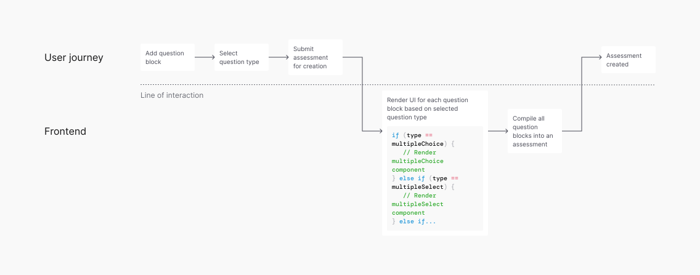
We asked tutors who taught a variety of subjects what types of questions were included in the assessments they create. The top question types were multiple choice, multiple select, long answer and short answer.
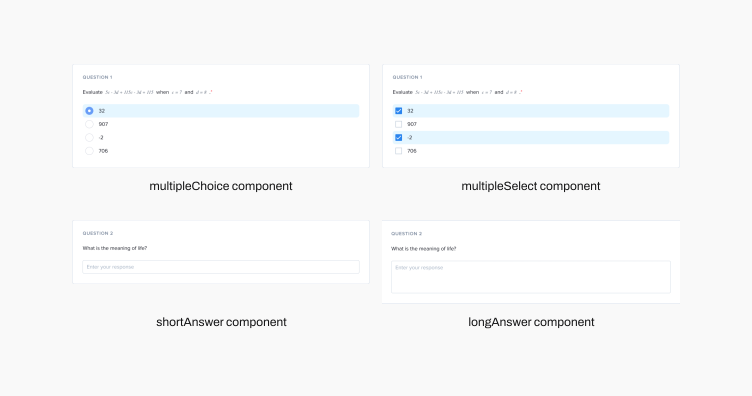
How to handle large design files
This was a large project. Once it was clear that there would be several question types, I realized a component library was necessary to clearly document how each type and how the various properties of each type would be styled. This created a single source of truth for our project team and sped up the handoff process by avoiding unnecessary back-and-forth.
Understanding the code
One thing I would do better next time around is attempt to understand the code at a deeper level. I have some high level understanding and thought this sufficed because the engineers did not express any serious concerns with my UI decisions, but writing this case study made clear the gaps in my knowledge. Maybe I’m just curious, but I want to know how something like this would be built from the front-end, at least in pseudo-code.